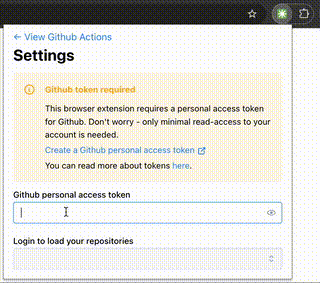
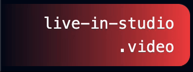
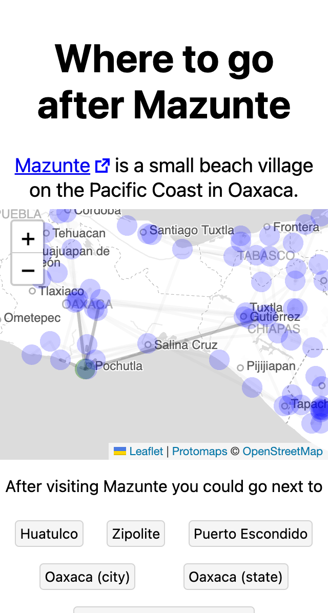
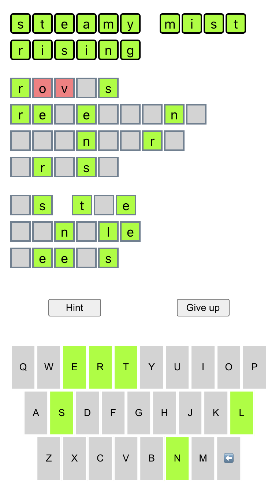

Hi! I'm Will.
Below are some of my personal projects.
You can read about my professional experience on the /about page.
A browser extension that provides accurate translations in context.
A browser extension that shows workflow runs from all of your Github repos in one place.

Available for Chrome
A website just for browsing youtube videos like Tiny Desk Concerts, KEXP live sessions, Audiotree, and others.

A simple map for travellers which visualizes data from wikivoyage.org to help find new places to visit. Uses Leaflet and Protomaps to display the interactive map in browser.

A browser extension that scrapes guitar tabs while you browse ultimate-guitar.com and persists them locally with IndexedDB.
A daily word puzzle game inspired by Wordle. Updated daily using Github Actions.
